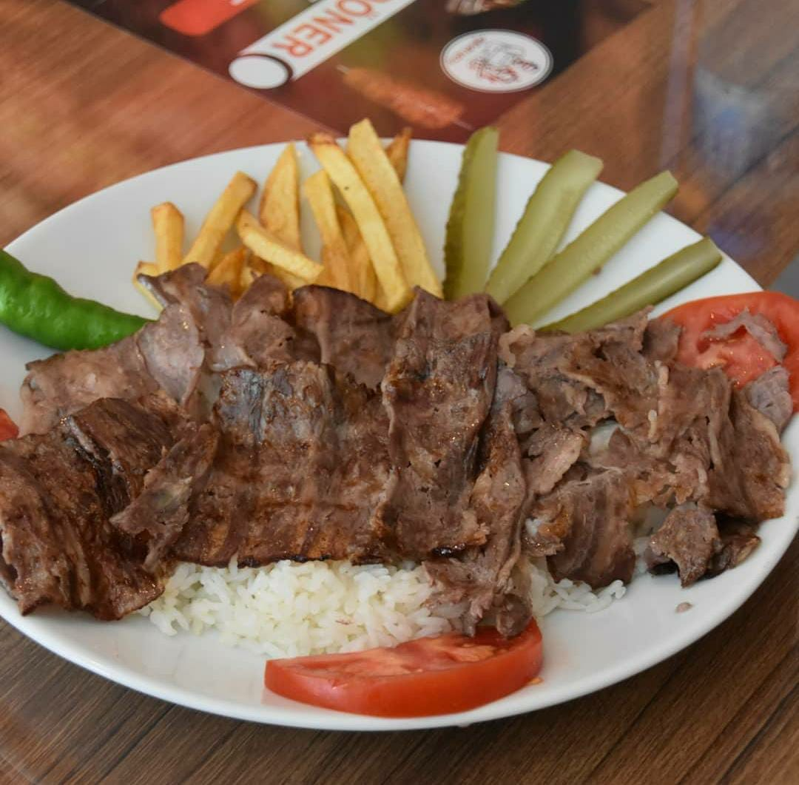
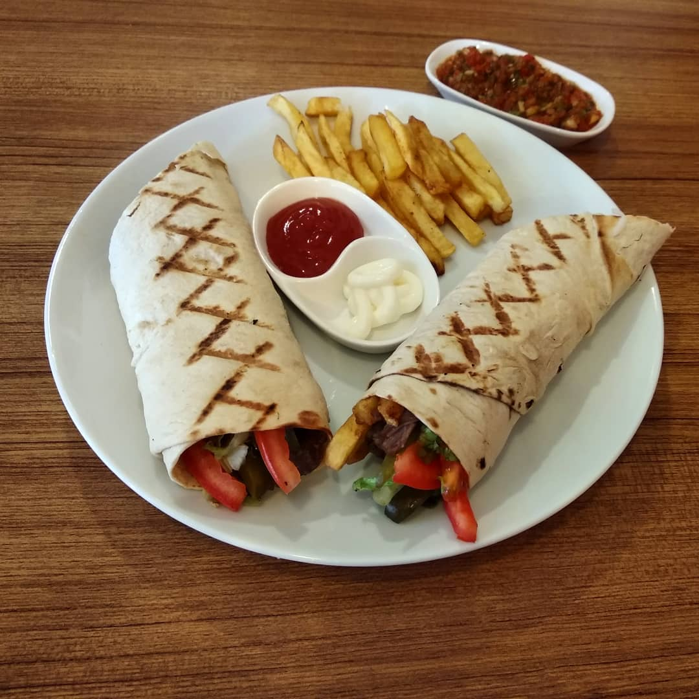
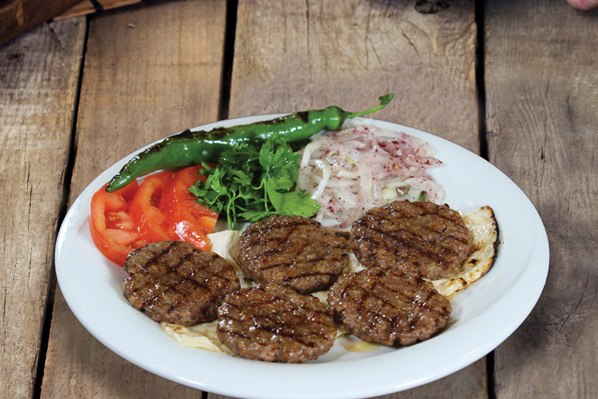
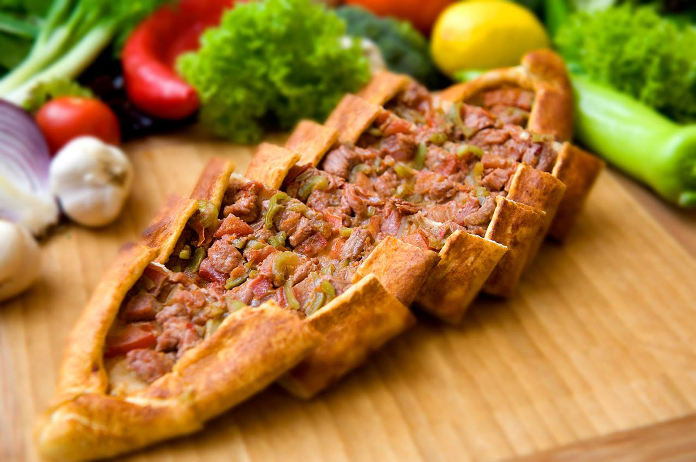

Ürünlerimiz

Döner Çeşitleri
48 saat özel sosuyla marine edilmiş etimizin günlük olarak
kısık ateşte pişirilip siz değerli misafirlerimize özenle
hazırlanmış zengin bir porsiyon ve meze çeşitleri ile servis
edilmektedir.
Detaylar

Dürüm Çeşitleri
Özenle seçilmiş dana etlerimiz 48 saat marinasyon sürecinden
sonra, isteğinize göre özel tandır lavaşı, kendi ürünümüz olan
tombik ekmek veya somun ekmek arasına 5 farklı çeşit garnitür
ve meze ile servir edilir.
Detaylar

Izgara Çeşitleri
En kaliteli malzemeler ve en özel baharatlarla hazırlanan
ızgara ürünlerimiz siz değerli misafirlerimize özenle
hazırlanmış zengin bir porsiyon ve meze çeşitleri ile servis
edilmektedir.
Detaylar

Fırın Çeşitleri
Kendi mutfağımızda özenle hazırlanan 9 farklı pide çeşidi ve 4
farklı lahmacun çeşidimiz sıcaklığı ve bol mazelemesiyle siz
değerli misafirlerimize çıtır çıtır özel servis tabaklarıyla
servis edilmektedir.
Detaylar
Hakkımızda
2020 yılında İstanbul Pendik'te faaliyete başlayan aile restoranı Ay Döner & Köfte'nin ustası 30 yılı aşkın süredir sektöründe hizmet vermiş. Yurtdışında birçok ülkede Türkiye lezzetlerimizi tanıtmış Ayhan Usta ve ailesi tarafından işletilmektedir.Ürünlerimiz Türkiye'nin nadide yerlerinden gelen etler arasından özenle bünyemiz tarafından seçilir. Tarifi dünyada sayılı ustalar tarafınca bilinen özel terbiyesinde 48 saat marine edilen etlerimiz misafirlerimizin isteği çerçevesinde hazırlanır ve zengin porsiyonlarla sunumu yapılır.